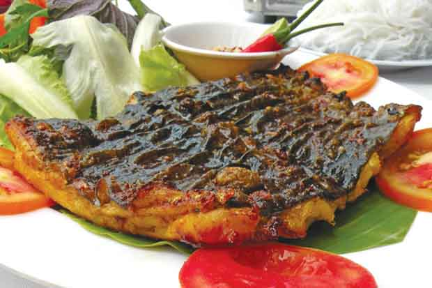

Cá chình nướng muối ớt

Cá chình có thể sánh ngang với các đặc sản như tôm hùm, sò điệp… Nó là loài cá da trơn thịt béo ngọt, không dai, có hương vị thơm ngon đặc trưng mà lại rất giàu chất dinh dưỡng. Đặc biệt, cá này tốt cho người mắc bệnh đau cột sống, hay mắc các chứng bệnh liên quan đến xương khớp.